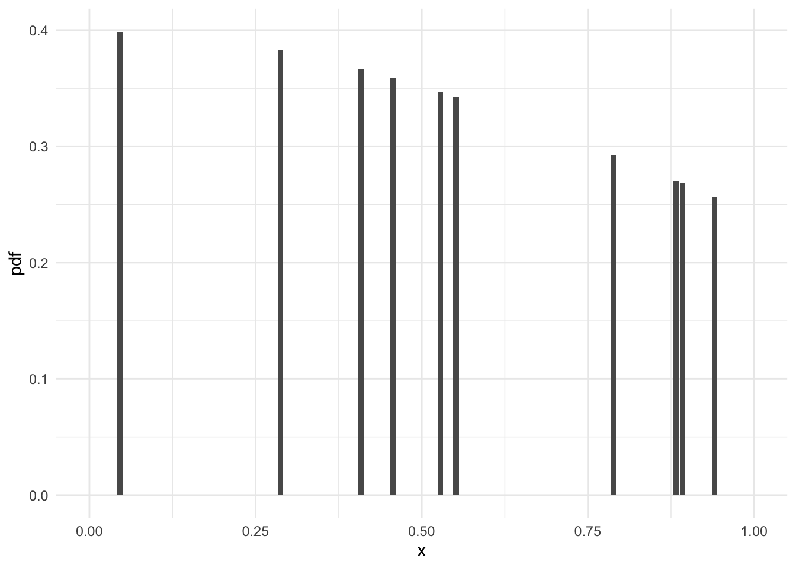

current_price <- 100
initial_price <- 80
holding_period <- 180 # Days
annualized_return <- (current_price / initial_price)^(365 / holding_period) - 1
annualized_return[1] 0.5722151Statistics is the scientific discipline concerned with the collection, organization, analysis, and interpretation of data to draw meaningful conclusions and facilitate informed decision-making. At the heart of statistics lies probability theory, which provides the theoretical foundation for dealing with uncertainty and random phenomena. This interplay between statistics and probability is particularly pivotal in the field of advanced financial analytics.
In this domain, statistical methods are indispensable for interpreting vast amounts of financial data, enabling analysts to discern patterns, predict trends, and quantify risks. Techniques such as regression analysis, hypothesis testing, and time series analysis are routinely employed to make sense of market behaviors and investment performances. Moreover, statistical models, grounded in probability theory, are essential for understanding the likelihood of various financial outcomes and for making predictions under conditions of uncertainty.
Advanced financial analytics leverages these statistical tools not just for descriptive purposes, but also for prescriptive and predictive analytics. This includes the development of sophisticated models for risk management, portfolio optimization, and algorithmic trading. These models rely heavily on the principles of statistical inference, where conclusions about the entire financial market are drawn from sample data.
Moreover, the advent of big data and computational advancements has significantly expanded the scope and complexity of financial statistical analysis. Machine learning algorithms, which are an extension of traditional statistical techniques, are increasingly being used to identify complex nonlinear patterns in financial markets that were previously undetectable.
In summary, statistics and probability theory are not just academic disciplines; they are the bedrock of financial decision-making in an uncertain world. This primer will guide readers through the fundamental statistical concepts and methods that are crucial for mastering advanced financial analytics, providing the necessary tools to navigate and excel in the dynamic field of financial analysis.
Scalar quantities are numerical values that don’t depend on direction, such as temperature, mass, or height. In finance, scalars often appear in the form of returns, exchange rates, or prices. As a real-world finance application, suppose you want to compute the annualized return of a stock.
current_price <- 100
initial_price <- 80
holding_period <- 180 # Days
annualized_return <- (current_price / initial_price)^(365 / holding_period) - 1
annualized_return[1] 0.5722151Vectors are arrays of numbers, and matrices are rectangular arrays. Both play a crucial role in expressing relationships between variables and performing computations efficiently. Consider a hypothetical scenario where you compare monthly returns across three different assets.
monthly_returns <- c(0.02, -0.01, 0.03)
asset_names <- c("Asset A", "Asset B", "Asset C")
returns_dataframe <- data.frame(Asset = asset_names, Return = monthly_returns)
returns_dataframe Asset Return
1 Asset A 0.02
2 Asset B -0.01
3 Asset C 0.03Functions map inputs to outputs and are ubiquitous in mathematics, statistics, and finance. Suppose you seek to calculate compound interest.
compound_interest <- function(principal, rate, periods) {
return_amount <- principal * (1 + rate)^periods
return_amount
}
initial_balance <- 5000
yearly_rate <- 0.04
years <- 5
final_balance <- compound_interest(initial_balance, yearly_rate, years * 12)
final_balance[1] 52598.14Descriptive statistics capture essential information about data, such as location, spread, skewness, and variability. These measurements aid in understanding the overall behavior of the data. For instance, you might want to examine a firm’s quarterly sales revenue.
sales_revenue <- c(25000, 27000, 26000, 28000, 30000)
sales_stats <- summary(sales_revenue)
sales_stats Min. 1st Qu. Median Mean 3rd Qu. Max.
25000 26000 27000 27200 28000 30000 Probability theory offers a systematic approach to studying uncertain events and measuring uncertainty, serving as the cornerstone for much of statistical analysis. It provides a framework for quantifying the likelihood of events, ranging from the most mundane to the highly complex, and is essential for comprehending various statistical techniques used in data analysis.
This theory revolves around the concept of a ‘probability’, a measure that assigns a numerical value to the likelihood of an event occurring, ranging from 0 (impossibility) to 1 (certainty). These probabilities are fundamental to understanding and interpreting data in a wide range of disciplines, from finance and economics to the natural and social sciences.
In the context of statistics, probability theory is integral to the development and application of models that describe real-world phenomena. It underpins key statistical concepts such as random variables, probability distributions, expectation, variance, and covariance. These concepts are crucial for conducting hypothesis testing, estimating model parameters, and predicting future observations.
Furthermore, probability theory is vital in the assessment of risk and uncertainty. In fields such as finance, insurance, and economics, the ability to quantify risk using probabilistic models is crucial for making informed decisions. This includes evaluating the likelihood of financial losses, determining insurance premiums, and forecasting market trends under uncertainty.
In addition, probability theory lays the groundwork for advanced statistical techniques such as Bayesian inference, which incorporates prior knowledge into the statistical analysis, and stochastic modeling, used extensively in areas like financial modeling and risk assessment.
The role of probability in statistics is not just theoretical; it has practical implications in everyday data analysis. Whether it’s deciding the probability of a stock’s return over a certain threshold or assessing the risk of a new investment, probability theory is the tool that helps convert raw data into actionable insights.
As we delve deeper into this chapter, we will explore the fundamental principles of probability theory, its applications in various statistical methods, and its crucial role in making sense of uncertainty and variability in data. By gaining a solid understanding of probability theory, readers will be well-equipped to tackle complex data analysis tasks with confidence and precision.
A sample space \(\Omega\) is a set containing all conceivable outcomes of a random phenomenon. An event \(A\) is a subset of the sample space \(\Omega\); thus, \(A \subseteq \Omega\). The notation \(P(\cdot)\) indicates probability.
Given two events \(A\) and \(B\), the union operation \((A \cup B)\) corresponds to the set of outcomes contained in either \(A\) or \(B\) or both. The intersection operation \((A \cap B)\) is the set of outcomes that lie in both \(A\) and \(B\). The complement of an event \(A'\) refers to the set of outcomes in the sample space that are not in \(A\): \[\Omega = A \cup A'\quad,\quad A \cap A' = \emptyset\]
Conditional probability is the probability of an event \(A\) given that another event \(B\) occurs: \[P(A \mid B) = \frac{P(A \cap B)}{P(B)} \qquad (\text{assuming}\;\; P(B)>0)\]
For any two events \(A\) and \(B\), the joint probability satisfies the identity: \[P(A \cap B) = P(A)\times P(B \mid A) = P(B) \times P(A \mid B)\]
Given three events \(A\), \(B\), and \(C\), the chain rule decomposes the joint probability as follows: \[P(A \cap B \cap C) = P(A) \times P(B \mid A) \times P(C \mid A \cap B)\]
Bayes’ formula relates the conditional probabilities of two events, say \(A\) and \(B\), as follows: \[P(A \mid B) = \frac{P(B \mid A) \times P(A)}{P(B)}\]
Two events \(A\) and \(B\) are independent if and only if \[P(A \cap B) = P(A) \times P(B)\]
Independent events satisfy the following equality: \[P(A \mid B) = P(A) \qquad \text{and} \qquad P(B \mid A) = P(B)\]
A finite set \(\{A_1, A_2, \dots , A_n\}\) is a partition of the sample space if the following two conditions are satisfied:
Consider a partition of the sample space \(\{A_1, A_2, \dots , A_n\}\) and an arbitrary event \(B\). The total probability theorem states that: \[P(B) = \sum_{i=1}^{n} P(B \cap A_i) = \sum_{i=1}^{n} P(B \mid A_i) \times P(A_i)\]
Generalizations of Bayes’ theorem arise from the total probability theorem. Given a partition of the sample space \(\{A_1, A_2, \dots , A_n\}\) and an arbitrary event \(B\), the extended Bayes’ theorem reads: \[P(A_i \mid B) = \frac{P(B \mid A_i) \times P(A_i)}{\sum_{j=1}^{n} P(B \mid A_j) \times P(A_j)}, \quad \forall\; i \in \{1, 2, \dots, n\}\]
These concepts and relations form the backbone of probability theory, allowing us to perform calculations and make inferences based on the underlying structure of random phenomena. In the following sections, we explore more advanced tools and techniques, such as random variables, probability distributions, moments, and densities, which are essential for modeling financial and economic processes.
Assume the US produces 20 billion barrels of oil annually, exports 5 billion barrels, imports 2 billion barrels, and consumes the rest domestically. What percentage of domestic production does the US export?
domestic_production <- 20 - 2
export_percentage <- 5 / domestic_production * 100
export_percentage[1] 27.77778Two events are independent if the occurrence of one doesn’t affect the probability of the other. That is, P(A|B) = P(A) and P(B|A) = P(B). Equivalently, P(A ∩ B) = P(A) × P(B).
A random variable is a rule associating numerical values with outcomes in a sample space. There are two types of random variables: discrete and continuous.
For a discrete random variable, the PMF gives the probability of each value taken by the variable.
What is the probability of rolling a six-sided die twice and getting a sum equal to 7?
die_faces <- 6
combinations <- expand.grid(die1 = 1:die_faces, die2 = 1:die_faces)
desired_combinations <- combinations[(combinations$die1 + combinations$die2) == 7,]
probability <- nrow(desired_combinations) / (die_faces ^ 2)
probability[1] 0.1666667For a continuous random variable, the PDF gives the relative likelihood of the variable taking on any specific value within a defined region.
Generate 10 random values drawn from a uniform distribution between 0 and 1 and plot the PDF.
library(ggplot2)
set.seed(123)
random_values <- runif(10, 0, 1)
pdf_plot <- data.frame(x = random_values, pdf = dnorm(random_values))
ggplot(pdf_plot, aes(x = x, y = pdf)) +
geom_bar(stat = "identity") +
scale_x_continuous(limits = c(0, 1)) +
theme_minimal()
This section builds on the Fundamentals introduced in Section 1, providing a foundation in probability theory essential for understanding more advanced statistical techniques. Including examples and R code encourages interactive learning and promotes better retention. Move forward with Section 3, focusing on Statistical Inference, and remember to provide clear definitions, descriptions, and R code examples.
Probability theory offers a systematic approach to studying uncertain events and measuring uncertainty. Its foundational role in statistical analysis cannot be overstated, as it underpins the methods and techniques used to make sense of random phenomena and data. Understanding probability theory is essential not only for mastering statistical concepts but also for conducting robust and insightful data analysis in various fields.
Unlike many other branches of mathematics, probability theory is characterized by its lack of a single, unifying theory. This unique aspect stems from its historical development and the diverse applications it has found across different domains. Probability has evolved through contributions from mathematicians, philosophers, statisticians, and scientists, each bringing their perspective and influencing its theoretical foundations. As a result, probability theory encompasses a rich tapestry of approaches and interpretations.
There are two major schools of thought in probability theory: the frequentist and the Bayesian perspectives. The frequentist approach, which is the traditional form of probability, interprets probability as the long-run frequency of events occurring in repeated trials. It is grounded in the concept of an objective, empirical observation of frequencies. On the other hand, the Bayesian approach views probability as a measure of belief or certainty about the occurrence of an event, incorporating prior knowledge and subjective judgment into its framework.
This divergence in foundational understanding reflects the versatile and adaptable nature of probability theory. It allows for a range of methodologies and approaches tailored to the specific needs and nature of the problem at hand. In practice, this means that probability theory can be applied flexibly across disciplines – from the natural sciences, where it helps model inherent randomness, to the social sciences, where it captures the uncertainty in human behavior, and in finance and economics, where it aids in risk assessment and decision-making under uncertainty.
Moreover, the lack of a unifying theory in probability does not imply a weakness; rather, it highlights the field’s richness and its capacity to adapt and evolve. As we delve further into probability theory, we will explore these different interpretations and how they influence the application of statistical methods. We will examine how probability enables us to model complex, real-world situations with uncertainty and how it aids in the extraction of meaningful insights from data, despite and because of its diverse theoretical underpinnings.
In summary, the study of probability theory is a journey through a landscape filled with varied interpretations and methodologies, each providing valuable insights into the nature of uncertainty and randomness. This chapter aims to navigate this landscape, shedding light on the multifaceted nature of probability and its crucial role in data analysis.
Classical probability is built upon the assumption of equally likely outcomes in an experiment. The probability of an event reflects the relative frequency of the event in a long series of repeated trials. This paradigm focuses on estimating probabilities of hypotheses derived from a null hypothesis.
In finance, the classical probability paradigm manifests in cases like determining the probability of a stock returning a positive value during a fixed period, assuming historical stock returns follow a symmetric distribution. Another example is estimating the probability of exceeding a given level of credit risk based on historical borrower profiles.
Classical Probability, sometimes referred to as the “equiprobable” or “axiomatic” approach, goes back to the seventeenth century, with the pioneering work of French mathematician Blaise Pascal and Dutch scientist Christiaan Huygens. The classical interpretation posits that probabilities are ratios of favorable outcomes to the total number of equally probable outcomes. Jacob Bernoulli, Swiss mathematician, expanded upon the classical interpretation in his influential book “Ars Conjectandi” published posthumously in 1713.
Reference:
Frequentism posits that probabilities correspond to the long-run frequencies of events in repeated trials. It concentrates on estimating the parameters of probability distributions governing the generation of data, instead of considering alternative hypotheses. Many commonly used statistical tests, such as t-tests and chi-square tests, stem from the Frequentist perspective.
In finance, Frequentist methods surface in areas like value-at-risk (VaR) estimation, where VaR represents the worst-case loss of a portfolio within a given confidence interval. Frequentist methods allow the construction of asymptotic confidence bands for the VaR estimates. Another instance is estimating Sharpe Ratios using t-tests to assess significance and distinguish superior investment strategies from inferior ones.
Frequentism takes a long-run frequency perspective, asserting that probabilities are the relative frequencies of events obtained through repeated observations. This perspective became widely accepted in the nineteenth century thanks to British polymath John Venn and Austrian mathematician Johann Radon, among others. Sir Ronald Fisher, a renowned geneticist and statistician, championed Frequentism in the twentieth century, arguing that probability should solely deal with random variation in observations.
Reference:
Bayesian methods treat probabilities as degrees of belief concerning the truthfulness of propositions, conditioned on prior evidence. Bayesian inference combines prior knowledge with current evidence to update beliefs. This paradigm excels at capturing uncertainty in model parameters and accounts for complex interactions between variables.
In finance, Bayesian methods come in handy for numerous applications, such as estimating financial models with small datasets, incorporating expert judgment, and monitoring dynamic systems susceptible to sudden shifts. Examples include calibrating Black-Scholes option pricing models with Bayesian inference, detecting regime switching in Markov-Switching models, and assessing the impact of exogenous events on financial markets using Bayesian networks.
Lastly, Bayesian methods trace their roots to English cleric and mathematician Thomas Bayes, whose revolutionary work, “An Essay Towards Solving a Problem in the Doctrine of Chances” laid the groundwork for Bayesian inference. Bayesian methods were subsequently promoted by French scholar Pierre-Simon Laplace in the late eighteenth century and garnered renewed interest in the mid-twentieth century, largely owing to British statistician Harold Jeffreys and American statistician Leonard Savage.
Reference:
Classical probability is often considered a distinct paradigm within the broader context of probability theory, but it is also related to and distinct from both frequentist and Bayesian perspectives.
The classical definition of probability, also known as the “a priori” or “theoretical” probability, dates back to the work of mathematicians like Pierre-Simon Laplace and Blaise Pascal. It is based on the principle of equally likely outcomes. In classical probability, the probability of an event is calculated by dividing the number of favorable outcomes by the total number of possible outcomes, assuming that all outcomes are equally likely. This approach is most applicable in well-defined and symmetrical situations, like the roll of a fair die or the flip of a fair coin, where it’s reasonable to assume that all outcomes have the same chance of occurring.
On the other hand, the frequentist perspective, which developed later, is based on the idea of long-run frequencies. According to this view, the probability of an event is the limit of its relative frequency in a large number of trials. It’s an empirical approach, relying on actual experimentation or observed data.
The Bayesian perspective, in contrast, incorporates prior knowledge or beliefs about an event into the probability assessment. It treats probability as a subjective degree of belief, which can be updated as new evidence is gathered.
Classical probability can be seen as a special case within the frequentist perspective, where the assumption of equally likely outcomes aligns with the idea of long-run frequencies in idealized conditions. However, in many real-world situations, the assumption of equally likely outcomes is not valid, and that’s where the frequentist and Bayesian approaches become more applicable.
In summary, classical probability is often considered a foundational concept that underlies more complex probabilistic reasoning found in both frequentist and Bayesian statistics. It provides a simple and intuitive way to understand probability in situations with symmetrical and clearly defined outcomes, but it has its limitations, especially in more complex or asymmetrical scenarios where the other two perspectives offer more flexibility and practical applicability.
In finance, the classical probability paradigm manifests in cases like determining the probability of a stock returning a positive value during a fixed period, assuming historical stock returns follow a symmetric distribution. Another example is estimating the probability of exceeding a given level of credit risk based on historical borrower profiles.
Classical Probability, sometimes referred to as the “equiprobable” or “axiomatic” approach, goes back to the seventeenth century, with the pioneering work of French mathematician Blaise Pascal and Dutch scientist Christiaan Huygens. The classical interpretation posits that probabilities are ratios of favorable outcomes to the total number of equally probable outcomes. Jacob Bernoulli, Swiss mathematician, expanded upon the classical interpretation in his influential book “Ars Conjectandi” published posthumously in 1713.
Reference:
In conclusion, the interplay and overlaps between Classical Probability, Frequentism, and Bayesian methods contribute significantly to the richness and depth of financial analytics. This pluralistic approach not only fosters a more comprehensive understanding of probability and statistics but also drives innovation and adaptability in tackling complex financial challenges.
For further analysis, would you like to: 1. Explore case studies where these paradigms are applied in financial analytics? 2. Delve into specific financial models that illustrate the use of these probability approaches? 3. Discuss the philosophical implications of adopting a plural
istic approach in probability theory? 4. Examine how recent technological advancements have influenced the application of these paradigms in financial analytics? 5. Understand the challenges and debates in integrating these different approaches in practical financial analysis scenarios?